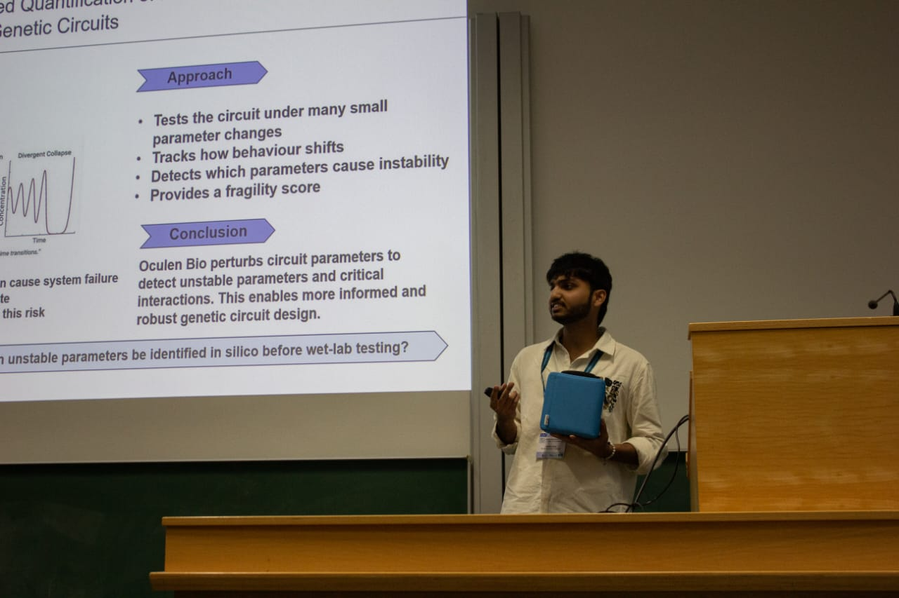
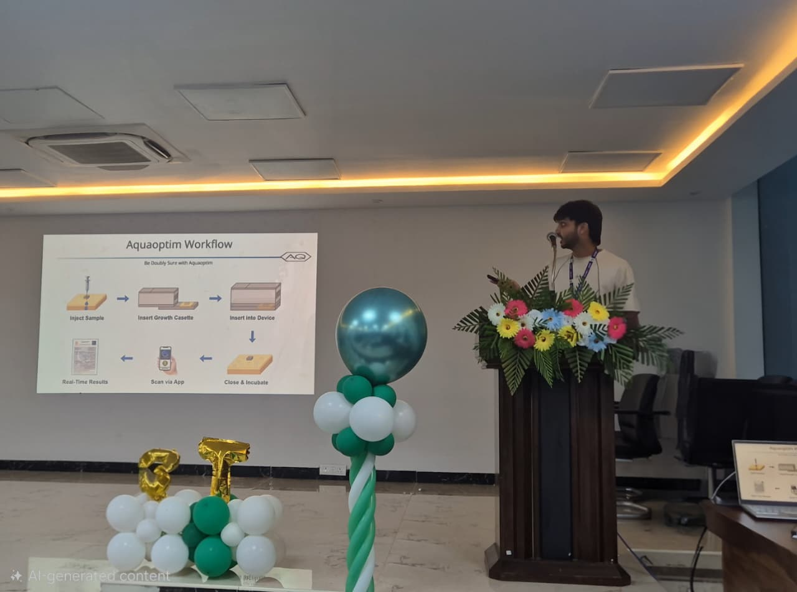

Building computational frameworks to study robustness, failure, and emergent behavior across biological systems.


Biological systems have continued to survive and remain stable under extreme environmental and evolutionary pressures for millions of years. My goal is to understand the principles behind this robustness through computational modeling, systems analysis, and synthetic biology to view biological systems through a deeper systems-level lens.
Computational platform for perturbation simulation, fragility detection, and robustness analysis across engineered biological networks.
Transforms gene-network behavior into debugging and stabilization challenges under mutation pressure.
Combines genetic traits, phenology, and satellite-derived stress signatures to investigate large-scale resilience behavior.
Oscillators, logic gates, memory systems, biosensors, and feed-forward architectures modeled using Antimony/SBML computational frameworks.
Designed for rapid field-deployable water-quality analysis in low-resource environments.
Research interactions with synthetic biology and systems biology groups across Germany, Japan, Switzerland, and Israel.